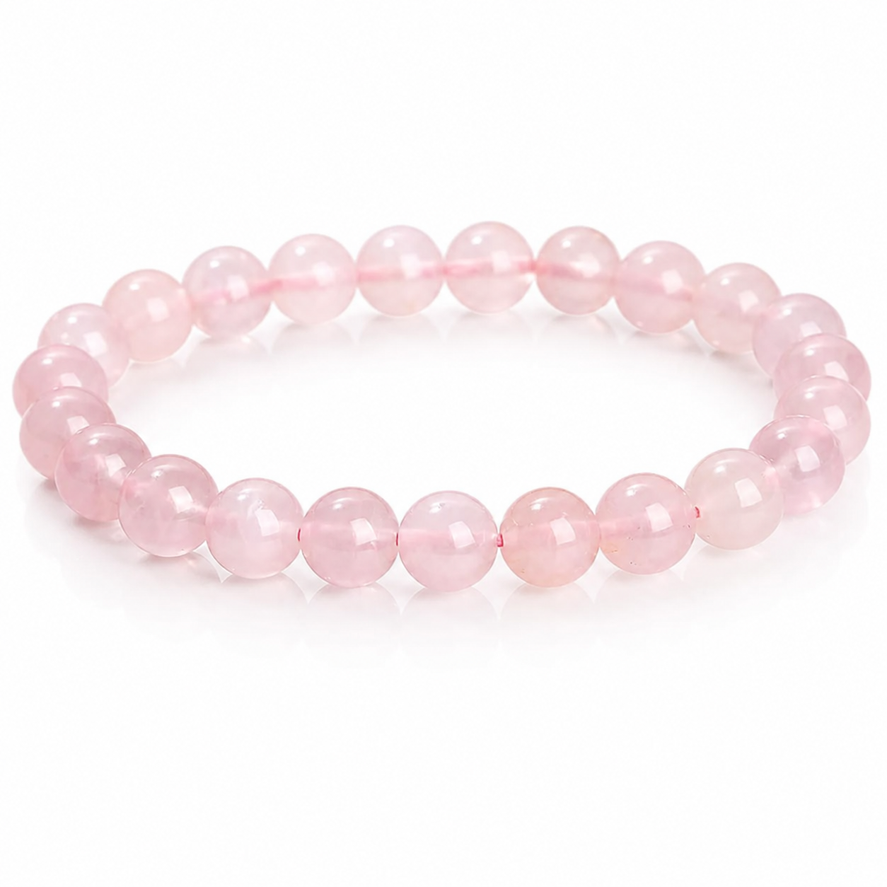

Love · Self-care
Natural Rose Quartz Bracelet
Polished blush-pink round beads create a gentle, versatile bracelet for everyday outfits, meaningful gifts and simple stacking.
- Stone
- Natural rose quartz
- Finish
- Polished round beads
- Designs
- Single-strand and three-wrap options
- Bead sizes
- Approx. 5–20 mm
- Style
- Unisex stretch bracelet
- Wrist fit
- Confirmed before order
Choose Your Size
Bead Size & Count Guide
Smaller beads are also available as a three-wrap bracelet. Single-strand options range from subtle everyday sizes to bold statement beads.
| Approx. bead diameter | Design | Reference bead count |
|---|---|---|
| 5–5.8 mm | Three-wrap bracelet | About 98 beads |
| 6–6.8 mm | Three-wrap bracelet | About 85 beads |
| 7–7.8 mm | Single strand | About 25 beads |
| 8–9 mm | Single strand | About 20 beads |
| 10–11 mm | Single strand | About 17 beads |
| 12–13 mm | Single strand | About 16 beads |
| 14–15 mm | Single strand | About 15 beads |
| 16–16.8 mm | Single strand | About 13 beads |
| 17–18 mm | Single strand | About 13 beads |
| 19–20 mm | Single strand | About 12 beads |
Diameter and bead count are reference values. Stock, natural variation and the requested wrist fit can cause small differences.
Appearance & Natural Character
Rose quartz naturally ranges from very pale blush to a fuller soft pink. Translucency, clouding, internal lines, inclusions and slight color differences are natural features rather than identical factory-made patterns.
You can request current product photos before approval so the exact bracelet can be confirmed.
Care Guide
- Remove before bathing, swimming, sleeping or sports.
- Keep away from perfume and household chemicals.
- Wipe gently with a soft dry cloth after wearing.
- Store separately and avoid impacts or prolonged strong sunlight.
Traditional Meaning
Rose quartz is traditionally connected with love, compassion, emotional warmth and self-care. Its soft blush color works well as a subtle everyday accessory.
Traditional crystal meanings are cultural and spiritual associations, not medical claims.
Before You Order
- Measure your wrist where you plan to wear the bracelet.
- Tell us your preferred bead diameter and design.
- We will confirm current stock, photos, fit, price and delivery details.